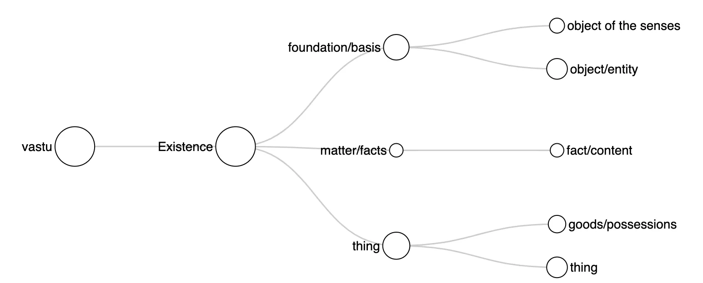
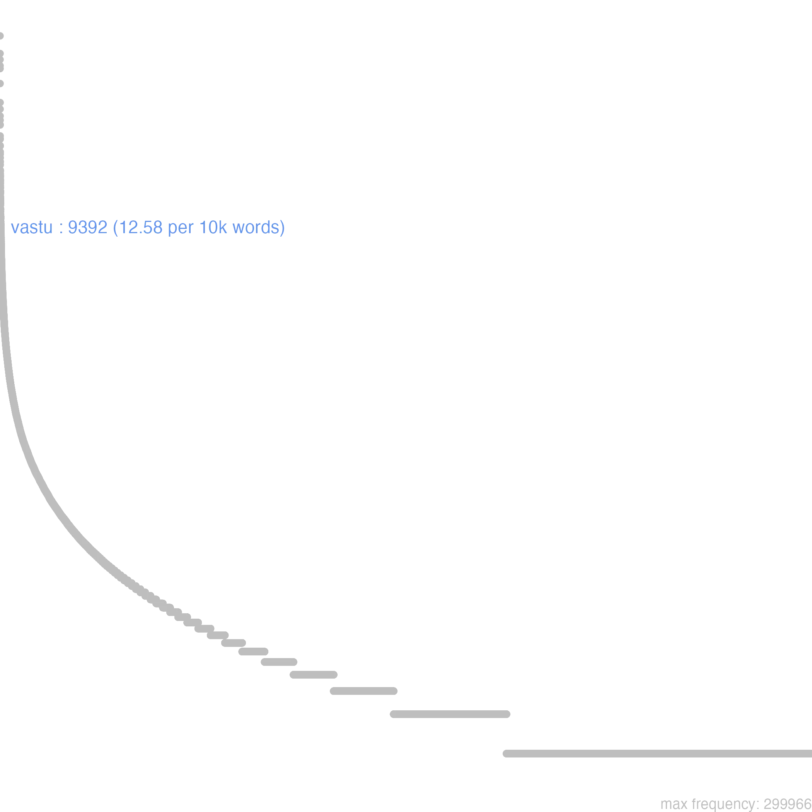
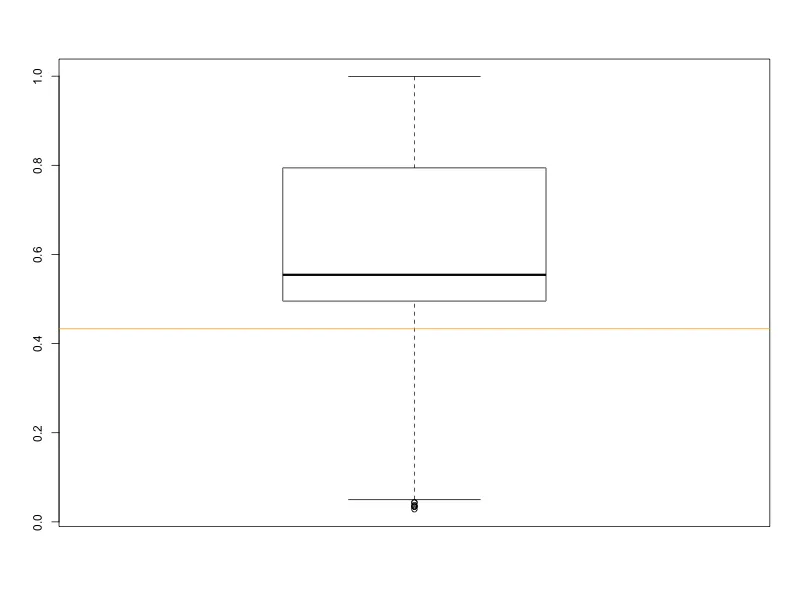
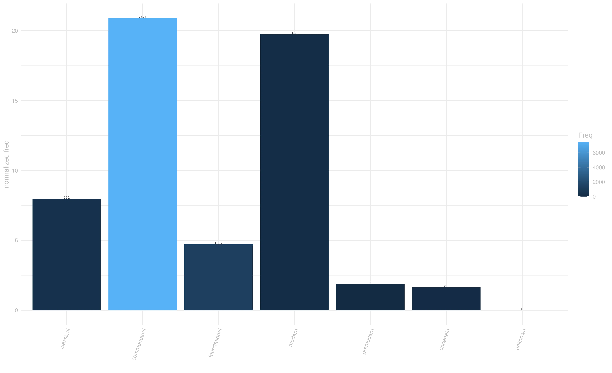
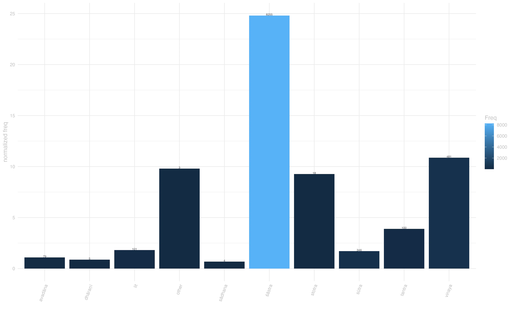
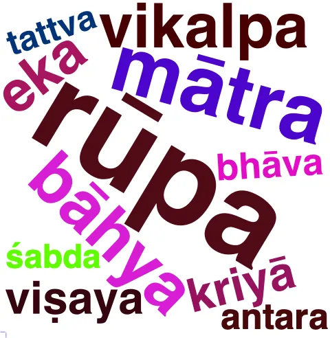

14 vastu
na kiñcid vikalpayati n^ānyatra vastu-mātraṃ gṛhṇāti tathatā-mātram / [bodhisattvabhūmi, 28] “a bodhisattva … does not form any type of conceptual thought whatsoever and does not grasp anything other than the bare substance [of entities] and [their] bare suchness.” [Engle, 72]
14.0.1 overview
Vastu carves a considerable slice of the conceptual domain of Existence. Broadly speaking, vastu means ‘what is there’. Within this broad and under-specified sense, it takes a variety of meanings, which are best conceived as standing on a continuum between denoting an ontological state, a state of affairs as well as individual, tangible objects. Specifically it can denote the foundation/basis of either reality in general1 or specific phenomena and experiences;2 or, more abstractly, it can mean a set of matters or facts.3 Most typically in our corpus it means thing or an individual object in general,4 one’s goods/possessions.5 In philosophical discourse, it refers to an object/entity,6 typically understood as ontologically real,7 whose characteristics and expressibility are object of much debate in Buddhist literature. In this latter use, the boundaries between the sense foundation/basis and the sense object/entity are often porous, and it is difficult to determine whether (or to what extent) vastu is meant as the underlying ontological foundation of some characteristics, or for the application of verbal labels, or rather as the actual object to which such characteristics and names are attached.8 Finally, following from the ontological end of vastu’s semantic spectrum, the adverbial form vastutaḥ expresses the idea of in reality and is used alongside paramārthataḥ and often contrasted with vyavāhāra.9

14.0.2 frequency
Vastu is among the top-frequency words in our corpus. Although it is more evenly dispersed across genres than the average words in our corpus, its frequency is decidedly over-represented in śāstra, in line with its role in ontological discussions. Following this trend, the commentarial period shows the highest normalized frequency.
 ## dispersion by genre {#sec-genreDP}



14.0.3 context
Several collocational patterns featuring vastu are noteworthy. The phrase vastu-mātra (mere entity/object) appears frequently in Yogācāra literature, indicating the school’s emphasis on consciousness-only doctrine.10 Particularly noteworthy is the Bodhisattvabhūmi’s extended discussion of nir-abhilāpya vastu (ineffable entity), the pre-verbal state of things that constitutes reality as it really is:11 “nir-abhilāpyaṃ vastv ālambanī-kṛtya sarva-dharmeṣu yā tathatā” (taking the ineffable entity as object, that suchness in all phenomena).

14.0.4 connotation
The semantic prosody of vastu shows a predominantly neutral stance, with some notable negative hues and rare positive ones. A neutra-negative prosody characterizes philosophical discussions on emptiness,12 and the Yogācāra critique of language as not ontologically gounded: nir-vastuko hy abhilāpas tat saṃvṛty^āpi na vidyate / viparyāsasya vastutvāc c^opalabdhir na vidyate // [Laṅkāvatārasūtra, 115]
“That which exists only as word and not as reality such is not to be found even in worldly knowledge; this comes from the nature of reality being erroneously understood, for no such perception is possible.” [Suzuki, 236]
This entry is based on version 6 of of the Visual Dictionary of Buddhist Sanskrit, see data at zenodo.org/records/13985112
sa khalu bodhisattvas tena dūr^ānupraviṣṭena dharma-nairātmya-jñānena nir-abhilāpya-svabhāvatāṃ sarva-dharmāṇāṃ yathābhūtaṃ viditvā na kiñcid vikalpayati n^ānyatra vastu-mātraṃ gṛhṇāti tathatā-mātram / bodhisattvabhūmi 28
“Indeed, a bodhisattva who has realized the ineffable nature of all entities as it truly is with [a form of] the knowledge of the insubstantiality of phenomena that has long since penetrated [into its meaning] does not form any type of conceptual thought whatsoever and does not grasp anything other than the bare substance [of entities] and [their] bare suchness.” [Engle 72]↩︎rūpa-śabda-rasa-sparśā gandhā dharmāś ca ṣaḍ-vidham / vastu rāgasya doṣasya mohasya ca vikalpyate // 23 — 7 // mūlamadhyamakakārikā 22
“Colour/shape, sound, taste, tactile sensation, smell and dharmas: these six are conceived as the basis of desire, hatred and stupidity.” [Batchelor]↩︎a-sat-paribhogena bhikṣavo na paribhoktavyaṃ sāṃghikaṃ vastu agnighaṭ-^opamam / sāṃghikaṃ vastu viṣopamam / sāṃghikaṃ vastu vajropamam / sāṃghikaṃ vastu bhāropamam / kAraNDavyUha 308
“Misconduct should never be indulged in. That which relates to the community (sāṃghikaṃ vastu) is like a vase of fire (agnighaṭopamam), a poison (viṣopamam), a vajra (vajropamam), a burden (bharopamam).” [Studholme 154]↩︎yā cetanā sarva-pariṣkāra-sva-deha-nirapekṣasya bodhisattvasya keval-^ādhyātmika-vastu-parityāgāya kāya-vāk-karmān avadyaś ca sarva-deya-vastu-parityāgaḥ / bodhisattvabhūmi 80
“What is the essence of generosity? It is the volition of a bodhisattva who is indifferent toward all material objects as well as [his or her] own body, and [a volition] that arises together with [an attitude that is] free of acquisitiveness. It is also the deeds of body and speech that are caused to arise by that [volition] for the purpose of giving up those objects that are suitable to be given, …” [Engle I.9.1]↩︎priyāṇi vastūni tath ^aiva putrān dāsyāmi ca tvām aham arthinaḥ san / gaNDavyUhasUtra 322
“I will give away my prized possessions, Even my children, yet I want you; …” [Cleary 1416]↩︎n ākāśa samatā yuktā nir-vikalpasya vastunaḥ / nānā-saṃjñā vikalpānām avakāśa-prabhāvanāt // 5—85 // madhyamakahRdayakArikA 5.84
“It is not reasonable for [the Dharma nature] to be a non-conceptual entity like space, because [space] permits a variety of concepts.” [Eckel 283]↩︎n ākāśa samatā yuktā nir-vikalpasya vastunaḥ / nānā-saṃjñā vikalpānām avakāśa-prabhāvanāt // 5—85 // madhyamakahRdayakArikA 5.84
“It is not reasonable for [the Dharma nature] to be a non-conceptual entity like space, because [space] permits a variety of concepts.” [Eckel 283]↩︎evaṃ tasminn ākāśa-sthānīye nir-abhilāpye vastuni vividh^ābhilāpa-kṛtāḥ saṃjñā vikalpāḥ prapañca-saṃjñ^ānugatāḥ rūpa-karma-sthānīyāḥ pravartante / bodhisattvabhūmi 181
“In a similar way, the conceptions and false notions that resemble physical objects and their actions and that are both created by a variety of expressions and accompanied by attachment to [verbal] elaborations arise in the ineffable reality that resembles space.” [Engle 441]↩︎na tu paramārthato darśanam asti yen ^ aivaṃ dṛṣṭ^-ādi-vyavahāraḥ / vedanā tena n^ ekṣyate yena dṛṣṭa-sukha-sādhan^-ādi-vyavahāro apy anyata eva tena kāraṇena vedanā n^ ekṣyate na dṛśyate vastutaḥ // bodhicaryāvatārapañjikā 243
“[…] but there is not seeing absolutely because the seen etc. is likewise conventional usage. Therefore sensation is not perceived. Because even the conventional usage of the seen, means of bringing about pleasure etc. is as an other, for this reason sensation is not perceived.” [Oldmeadow 520.16]↩︎[…] vastu-mātre ’rtha-mātre ālambane cittam upanibadhya sarva-prapañc^āpagatena sarva-citta-pariplav^āpagatena saṃjñā-manasikāreṇa sarv^ālambanāny adhimucyamānaḥ adhyātma-samādhi-nimitteṣu cittaṃ saṃsthāpayati […] bodhisattvabhūmi 77
“Through having fulfilled [the practice] of reflection with its eight aspects, a bodhisattva then bind their mind to an object that is beyond expression—one that is a bare substance and a bare import—and then, maintaining zealous devotion toward all meditation objects through bringing to mind conceptions that are free of all elaboration and mental unsteadiness, […].” [Engle 196-197]↩︎nir-abhilāpyaṃ vastv ālambanī-kṛtya sarva-dharmeṣu yā tathatā nir-vikalpa-samatā niryātā prajñā […] bodhisattvabhūmi 199
“[…] (1) the wisdom that, having taken hold of the ineffable reality, has developed an awareness of the suchness that pertains to all entities and the sameness that does not engage in conceptualization about them, […].” [Engle 482]↩︎,na tad vastu bhāvo n^ā-bhāvaḥ / abhilāpyen^ātmanā a-pariniṣpannatvān na bhāvaḥ / [bodhisattvabhūmi, 37]
“[…] that a substance is neither a thing that exists nor a thing that does not exist. Because its verbally described nature does not constitute an absolute mode of being, it is not a thing that exists.” [Engle, 99]↩︎